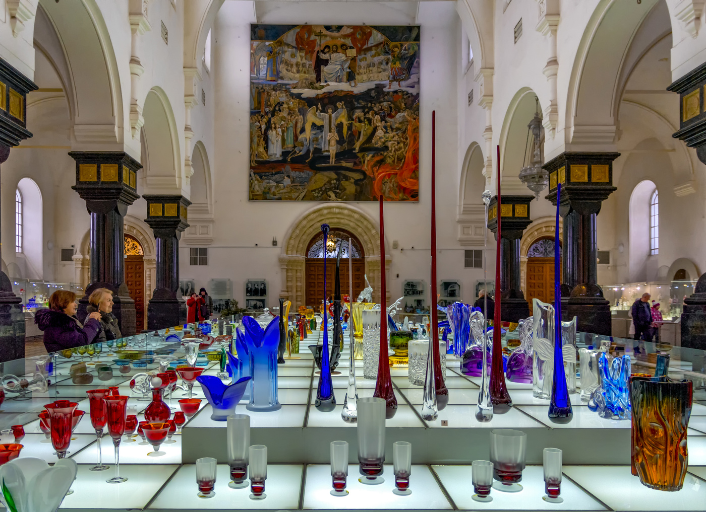
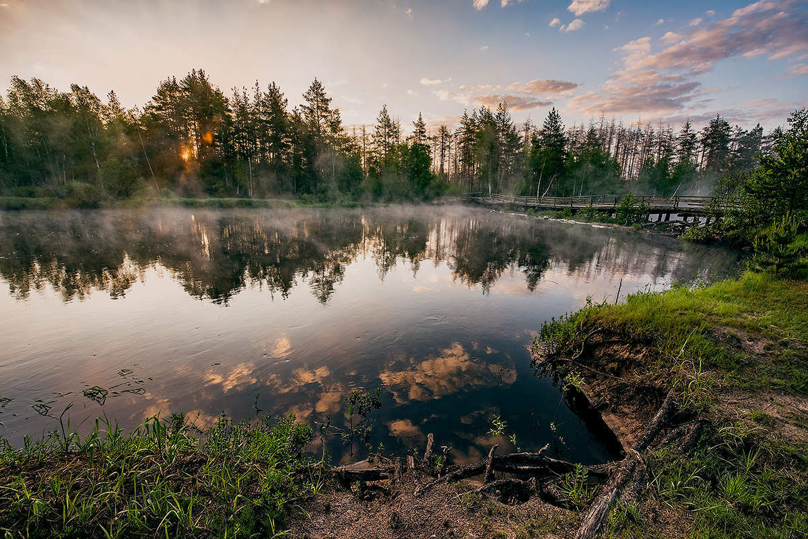
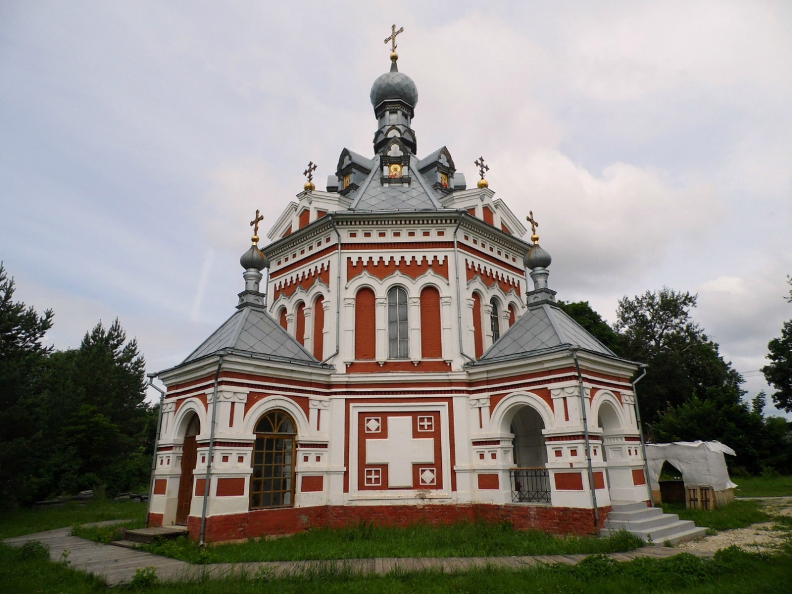

Гусь-Хрустальный – небольшой провинциальный город. Это один из многочисленных моногородов России. Градообразующим предприятием стал Гусевский хрустальный завод, построенный еще в XIX веке и принадлежавший предпринимателям Мальцовым. Здесь можно не только осмотреть достопримечательности, посетить музеи, но и отлично провести время на природе – населенный пункт располагается в живописном Мещёрском крае.

Любителей отдыха на природе в Гусь-Хрустальном порадуют два больших парковых комплекса. Один из них – Национальный парк «Мещера», занимающий огромную территорию в 119 тысяч га и являющийся, по сути, заповедником. Парк раскинулся на территории трех областей: Владимирской, Рязанской и Московской. В парковой зоне растут, в основном, хвойные деревья, что способствует чистейшему воздуху, насыщенному фитонцидами.

Храм-часовня святой Великомученицы Варвары и святой источник расположен на окраине города Гусь-Хрустальный. С юга, в притворе часовни находится колодезь со святой водой, а рядом камень от стопы Святой Варвары, основной вход в храм с северной стороны. Храм часовня стоит в низине неподалёку от речки Варварки, которая выше по течению забрана в бетонную трубу коллектора, но далее выходит на поверхность, образуя проточное озерко перед самой часовней
